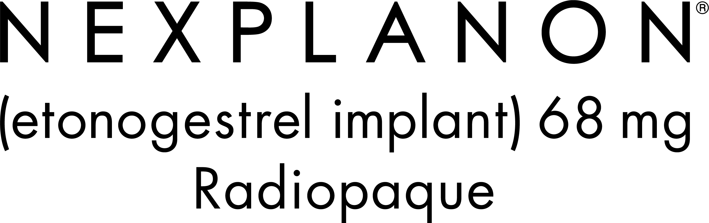

-
You should not use NEXPLANON if you are pregnant or think you may be pregnant; have or have
had blood clots; have liver disease
or a liver tumor; have unexplained vaginal bleeding; have breast cancer or any other cancer that is sensitive to progestin (a female hormone), now or in the past; or are allergic to anything in NEXPLANON. -
Talk to your healthcare provider about using NEXPLANON if you have diabetes, high cholesterol or
triglycerides, headaches, gallbladder or kidney problems, history of depressed mood, high blood
pressure,
allergy to numbing medicines (anesthetics)
or medicines used to clean your skin (antiseptics). These medicines will be used when the implant is placed into or removed from your arm. - Immediately after the NEXPLANON implant has been placed, you and your healthcare provider should check that the implant is in your arm by feeling for it. If you cannot feel the NEXPLANON implant, contact your healthcare provider immediately and use a non-hormonal birth control method (such as condoms) until your healthcare provider confirms that the implant is in place. You may need special tests to check that the implant is in place or to help find the implant when it is time to take it out.
-
The implant may not be placed in your arm
at all due to failed insertion. If this happens,
you may become pregnant. Removal of the implant may be very difficult or impossible if the implant is not where it should be. Special procedures, including surgery in the hospital, may be needed to remove the implant. If the implant is not removed, then the effects of NEXPLANON will continue for a longer period of time. Other problems related to insertion and removal include pain, irritation, swelling, bruising, numbness and tingling, scarring, infection, injury to the nerves or blood vessels, and breaking of the implant. Additionally,
the implant may come out by itself. You may become pregnant if the implant comes out by itself. Use a back up birth control method and call your healthcare provider right away if the implant comes out. - The most common side effect of NEXPLANON is a change in your normal menstrual bleeding pattern. In studies, one out of ten women stopped using the implant because of an unfavorable change in their bleeding pattern. You may experience longer or shorter bleeding during your periods or have no bleeding at all. The time between periods may vary, and in between periods you may also have spotting.
-
If you become pregnant while using NEXPLANON, you have a slightly higher chance that the pregnancy
will be ectopic (occurring outside the womb) than do
women who do not use birth control. Ectopic pregnancies can cause serious internal bleeding, infertility, and even death. Call your healthcare provider right away if you think
you are pregnant or have unexplained lower stomach (abdominal) pain. -
The use of NEXPLANON may also
increase your chance of serious blood clots, especially if you have other risk factors,
such as smoking. If you smoke and want to use NEXPLANON, you should quit. Some examples of blood clots are deep vein thrombosis (legs), pulmonary embolism (lungs), retinal thrombosis (eyes), stroke (brain), and heart attack (heart). It is possible to die from a problem caused by a blood clot, such as a heart attack or stroke. Tell your doctor at least 4 weeks before if you are going to have surgery or will need to be on bed rest, because you have an increased chance of getting blood clots during surgery or bed rest. - Cysts may develop on the ovaries and usually go away without treatment, but sometimes surgery is needed to remove them.
-
Besides changes in menstrual bleeding patterns, other common side effects reported in women using
NEXPLANON include: headaches; vaginitis (inflammation of the vagina); weight gain; acne; breast pain;
viral infection such as sore throats or flu-like symptoms; stomach pain; painful periods; mood swings, nervousness, or depressed mood; back pain; nausea; dizziness; pain and pain at the site of insertion. Implants have been reported to be found in a blood vessel, including a blood vessel in the lung. -
Call your healthcare provider right away if
you have pain in your lower leg that does not go away; severe chest pain or heaviness in the chest; sudden shortness of breath, sharp chest pain, or coughing blood; symptoms of
a severe allergic reaction, such as swollen face, tongue or throat, trouble breathing
or swallowing; sudden severe headaches unlike your usual headaches; weakness
or numbness in your arm, leg, or trouble speaking; sudden partial or complete blindness; yellowing of your skin or whites of your eyes, especially with fever, tiredness, loss of appetite, dark-colored urine, or light-colored bowel movements; severe pain, swelling, or tenderness in the lower stomach (abdomen); lump in your breast; problems sleeping, lack of energy, tiredness, or you feel very sad; heavy menstrual bleeding; or if you feel that the implant may have broken or bent while in your arm. - NEXPLANON does not protect against HIV or other STDs.
You are encouraged to report negative side effects of prescription drugs to the FDA. Visit www.fda.gov/medwatch or call 1-800-FDA-1088.
Please read the accompanying Patient Information for NEXPLANON and discuss it with your healthcare provider. The physician Prescribing Information also is available.
© 2022 Organon group of companies. All rights reserved. ORGANON and the ORGANON Logo are trademarks of the Organon group of companies.
US-XPL-116186 08/22
